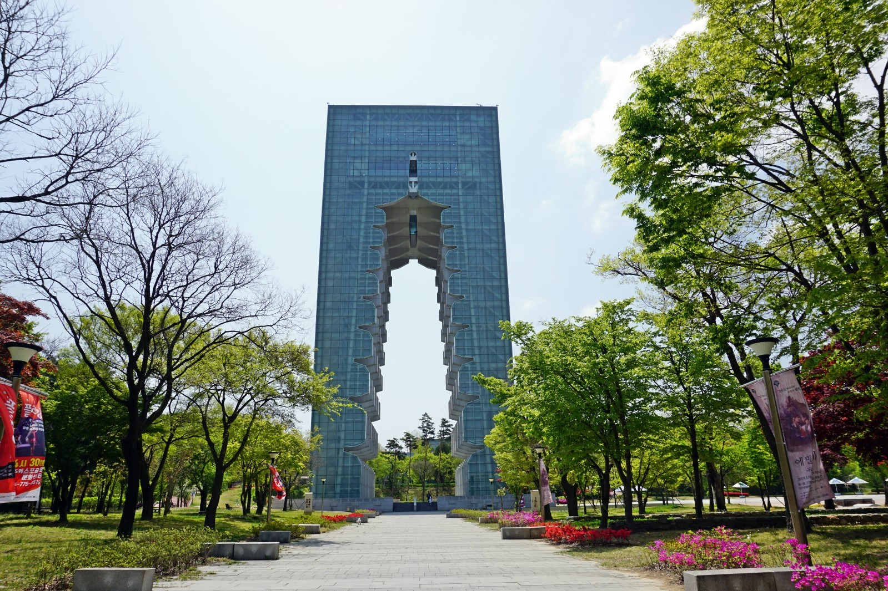

경주세계문화엑스포
경주세계문화엑스포는 반만년 유구한 문화가 응축돼 있는 ‘지붕 없는 박물관’ 경주에서 한국인의 문화 자긍심을 드높이고, 우리문화와 세계문화의 접목을 통해 인류문화 발전에 기여하고자 경상북도가 지난 96년에 조직했습니다.
영국이 산업박람회를 통해 20세기 산업사회를 이끌었듯 경주세계문화엑스포는 문화엑스포를 통해 21세기 문화아이콘을 선점하겠다는 목표로 미래 인류문명이 나아가야 할 좌표를 탐색하고, 지역과 국가 경쟁력을 높여가겠다는 포부를 갖고 있습니다.
천군동 보문관광단지에 있는 경주세계문화엑스포의 법인명은 ‘재단법인 문화엑스포’이며 1처1본부7부를 두고 있습니다.
재단법인 문화엑스포는 경주세계문화엑스포의 참된 이념을 실현시키고자 하루하루 힘찬 행보를 이어가고 있습니다.